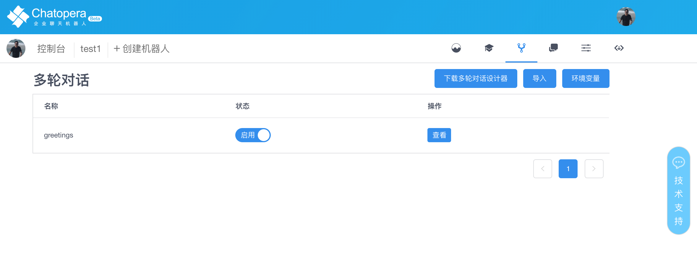
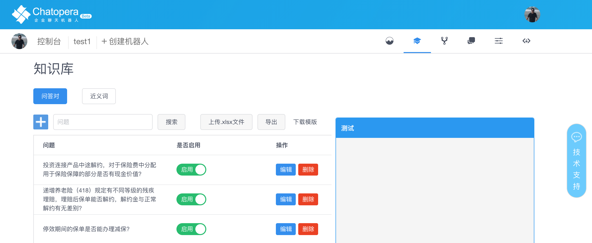
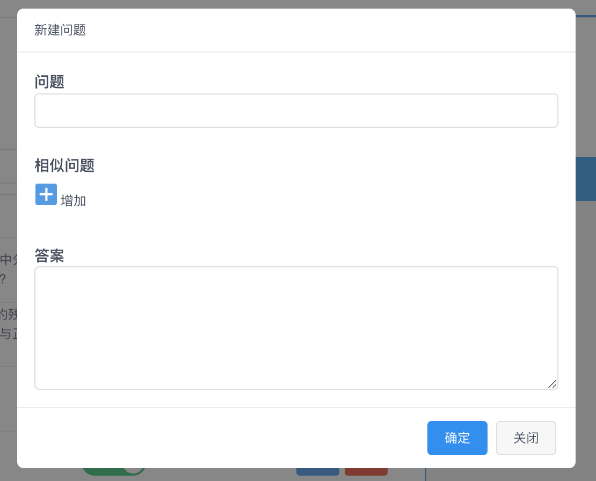
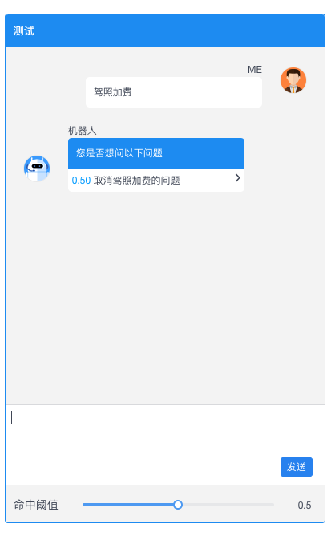
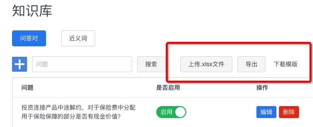
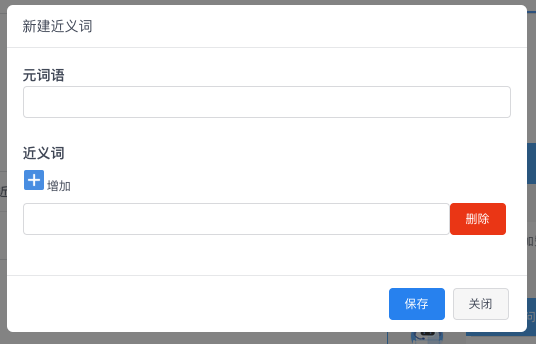
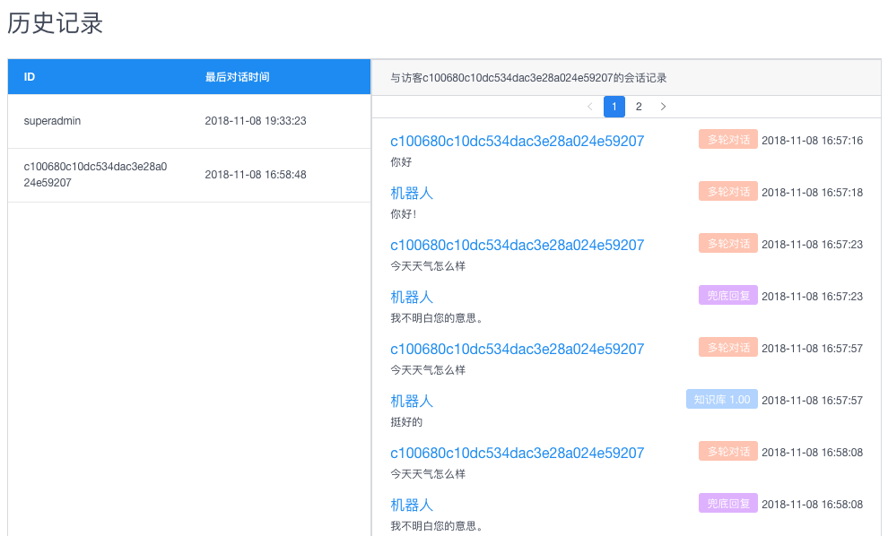
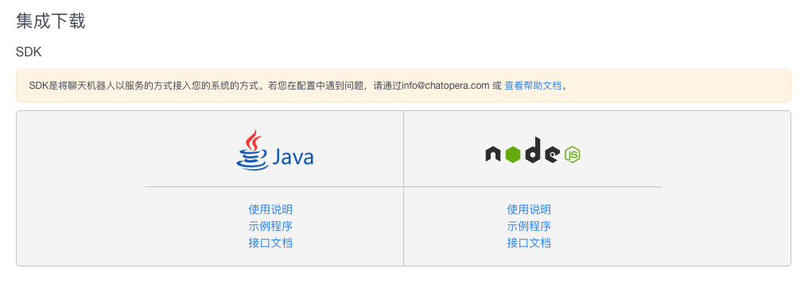

开发者平台
服务概述
聊天机器人即服务，面向互联网用户开放，聊天机器人开发者/开发商可以快速实现企业级的聊天机器人服务。
账号管理
注册
提示：请保证填写正确的邮箱地址用于找回密码，接收系统通知，该邮箱不会泄漏给第三方。
开发者平台的地址是：https://bot.chatopera.com
从浏览器打开后，点击“立即使用”，跳转到登录/注册页面，输入邮箱和密码，使用“回车键”【Enter】提交，即完成。
更新密码
登录后，在右上角看到头像，点击头像，在菜单中点击“个人中心”，来到“个人中心”页面后，可填入新的密码，点击“保存”。
找回密码
进入登录页面 https://bot.chatopera.com/login，点击“忘记密码”，根据提示完成。
此处会使用邮箱验证账号。
修改头像
登录后，在右上角看到头像，点击头像，在菜单中点击“个人中心”，来到“个人中心”页面后，点击屏幕中间的“头像”，弹出上传头像表单。
技术支持
在使用过程中，可以在控制台右侧看到“技术支持”常驻控件，点击“技术支持”，进入和客服人员的对话页面。
如果没有客服在线就绪，系统会提示留言。
获取技术支持的邮箱是 info@chatopera.com
开发者平台QQ交流群：809987971
配额
当前开发者平台每日单个用户可以免费请求机器人对话2000次，未来会至少保持单日>=1000次的免费配额，多出的部分按量收费，按日结算。
多轮对话
多轮对话是Chatopera开发者平台的特色功能，聊天机器人开发者可以使用多轮对话设计器实现满足企业业务需求的聊天机器人。多轮对话基于规则，使用对话脚本，并结合JavaScript*函数*实现固定话术和固定流程的聊天服务。
|  |
请访问详情页面了解更多内容。
知识库
知识库是基于信息检索系统的一问一答的问答服务，通过建立【问题-扩展问-答案】和近义词实现智能问答，常用于常见问题集的机器人对话。
|  |
问答对
- 新建
|  |
编辑
调试知识库
|  |
系统集成聊天机器人时，发送的知识库检索或多轮对话检索，会返回置信度score（也称为命中域值），该值在[0~1]区间，值越大代表机器人越确定回复的准确性。
对知识库的评测，常常用一系列测试问题查询返回结果，进而计算机器人回答的准确率评价检索系统。
在系统集成时，常常设定一个置信度，在高于该值时，可以将机器人的回复返回给消费者。或在某个区间时，询问消费者是否问以下问题，这是目前智能客服常见的场景。
通过知识库管理页面的命中率调试窗口，开发者可以调整置信度（也称为命中域值）来调试知识库。
- 启用/禁用问答对
在问答对列表，使用拨动开关切换状态。
导入知识库
Chatopera开发者平台支持导入一个文件，批量创建问答对。
|  |
目前，该文件格式必须为.xlsx，并且在表头注名各列的含义。
| 列 | 含义 | 说明 |
|---|---|---|
| 第一列 | 是否开启 | 问答对在知识库中有启用/禁用两个状态，只有启用的问答对在检索时有效。禁用状态的问答对可以是草稿，被废弃但是不想删除等情况。 |
| 第二列 | 问题 | 用文本描述的问题 |
| 第三列 | 答案 | 用文本描述的答案 |
| 第四列 | *扩展问1 | 问题的另一种问法 |
| 第五列 | *扩展问2 | 问题的另一种问法 |
| 第六列 | *扩展问3 | 问题的另一种问法 |
其中，第一列，第二列，第三列 是必填项，扩展问不是必填项，但是扩展问越多，机器人越智能。
另外，*扩展问N必须出现在当列有值的时候，用户可以添加多个扩展问。
在知识库管理页面，也有下载知识库模版文件的链接。
导出知识库
用户可以随时将知识库文件导出，导出文件可以更好的使用其他工具编辑，或作为备份，导出文件的格式为Excel。
近义词
提示：目前添加近义词是可以优化命中率的，但近期会升级优化这部分，得到更显著的提升。
近义词是另一种增加聊天机器人智能化水平的另外一个手段。
- 新建
在知识库管理页面，点击近义词，就可以看到新建按钮。
- 编辑
|  |
统计
在机器人的首页，可以看到机器人被访问的情况，统计分为三种：知识库检索，多轮对话检索和知识库点击事件。
历史记录
在机器人的一级菜单，可以进入历史记录列表，左侧是和该机器人对话的用户们，按照最近联系时间降序排列。选择一个用户，右侧展示详细的聊天历史。
|  |
系统集成
Chatopera开发者平台提供集成聊天机器人的方案为SDK，目前仅支持Java和Node.js，近期也会补充更多语言的SDK。
在聊天机器人的一级菜单，可以进入集成页面。
|  |
对于不同语言而言，其安装配置方式有别，但是用代码取得一个聊天机器人实例的方式大同小异，参数是一致的，请求结果也全部采用JSON数据格式。
各SDK的配置文档、接口文档和示例程序可以在集成页面得到。以下内容是对不同接口返回接口的解释。
获得机器人详情
SDK接口
chatbot.details
{
"name": "test1",
"fallback": "我不明白您的意思。",
"description": "ss",
"welcome": "你好！我是机器人客服。",
"primaryLanguage": "zh_CN"
}
name: 机器人名字 fallback: 兜底回复 description: 机器人描述 welcome: 机器人问候语 primaryLanguage: 机器人语言
检索多轮对话
SDK接口
chatbot.conversation
{
"state": "default",
"createdAt": 1541677323194,
"string": "欢迎惠顾！",
"topicName": "greetings",
"subReplies": [],
"service": {
"provider": "conversation"
},
"logic_is_fallback": false,
"botName": "test1"
}
state: 业务字段，可以在多轮对话脚本中设置 string: 机器人回复的文本内容 topicName: 机器人会话主题 logic_is_fallback: 是否是兜底回复 botName: 机器人的名字
service代表返回的数据来源，provider:script指多轮对话，provider:faq指知识库；不同数据来源也会提供相应信息。
| provider | key | 解释 |
|---|---|---|
| faq | ||
| docId | 文档ID | |
| post | 标准问 | |
| score | 分数 | |
| threshold | 阀值 | |
| conversation | 多轮对话 | |
| fallback | 兜底回复 | |
| mute | 该用户被该机器人屏蔽 |
回复处理逻辑
多轮对话获取回复的逻辑解释如下：
 |
- 用户输入，以文本的形式输入，语音输入也需要转化成文字。
- [知识库检索] 如果知识库检索出相似度大于0.8的问答对，直接返回得分最高的问题的答案。
- [多轮对话检索] 如果知识库没有检索出相似度大于0.8的问答对，检索多轮对话，如果命中了一个规则，直接返回答案。
- [兜底回复] 如果多轮对话也没有检索出答案，返回兜底回复。
检索知识库
SDK接口
chatbot.faq
[
{
"id": "AWbyu9DYjTtqn-PFv1GV",
"score": 1,
"post": "停效期间的保单是否能办理减保？",
"reply": "停效期间的保单可以办理减"
},
{
"id": "AWbyu86_jTtqn-PFv1GR",
"score": 0.3333333333333333,
"post": "主险期缴期间，附加险能不能办理减额缴清？",
"reply": "根据目前的业务规定：附加险缴费方式应与主险一致"
}
]
id: 问答对Id score: 置信度 post: 标准问 reply: 答案
获得用户列表
SDK接口
chatbot.users
[
{
"userId": "nodesdk",
"lasttime": "2018-11-08T11:45:44.268Z",
"created": "2018-11-08T11:42:02.104Z"
},
{
"userId": "superadmin",
"lasttime": "2018-11-08T11:33:23.163Z",
"created": "2018-11-08T11:33:23.167Z"
},
{
"userId": "c100680c10dc534dac3e28a024e59207",
"lasttime": "2018-11-08T08:58:48.575Z",
"created": "2018-11-08T08:57:16.915Z"
}
]
userId: 和机器人对话的用户标识 lasttime: 最后沟通时间 created: 第一次沟通时间
屏蔽用户
SDK接口
chatbot.mute
正常返回时，statusCode 200, body 为 {}。
取消屏蔽
SDK接口
chatbot.unmute
正常返回时，statusCode 200, body 为 {}。
是否被屏蔽
SDK接口
chatbot.ismute
返回Boolean类型值。
true
获取聊天历史
SDK接口
chatbot.chats
{
"total": 4,
"current_page": 1,
"total_page": 1,
"data": [
{
"userId": "nodesdk",
"textMessage": "xx",
"direction": "outbound",
"service": "faq",
"confidence": 1,
"created": "2018-11-08T11:45:44.448Z"
},
{
"userId": "nodesdk",
"textMessage": "xxx",
"direction": "inbound",
"service": "faq",
"created": "2018-11-08T11:45:44.276Z"
},
{
"userId": "nodesdk",
"textMessage": "xx",
"direction": "outbound",
"service": "conversation",
"confidence": 1,
"created": "2018-11-08T11:42:03.234Z"
},
{
"userId": "nodesdk",
"textMessage": "你好",
"direction": "inbound",
"service": "conversation",
"created": "2018-11-08T11:42:02.110Z"
}
]
}
total: 该用户和机器人之间对话总数 current_page： 当前页 total_page: 总页数 userId: 用户标识 textMessage: 文本内容 direction: 消息传递方向，【inbound】为消费者发送，【outbound】为机器人发送 service: 提供回复的服务 confidence: 置信度 created: 消息创建时间
可靠性保证
Chatopera开发者平台是企业级的服务，依托于青云的PaaS平台上，使用监控、负载均衡、集群等功能保证服务的高可靠性。